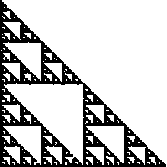

| In the Random IFS Algorithm the transformations Ti are applied in random
order, but they need not be applied equally often. |
| Associated with each Ti
is a probability pi, 0 < pi < 1,
representing how often each transformation is applied.
That is, |
| when N points are generated,
each Ti is applied about N⋅pi times. |
| To illustrate the effect of changing the probabilities, we use the IFS |
| T3(x, y) = (x/2, y/2) + (0, 1/2) |
T4(x, y) = (x/2, y/2) + (1/2, 1/2) |
| T1(x, y) = (x/2, y/2) |
T2(x, y) = (x/2, y/2) + (1/2, 0) |
|
| We take |
| p4 to range from 0 to 1 in steps of .05, |
| and |
| p1 = p2 = p3 = (1 - p4)/3. |
| Starting with p4 = 0, the first picture is the gasket.
Do you see why? |
|  |
| Click the picture to return. |
|
| Here is a way to find the probabilities that give
approximately uniform fill of the attractor. |